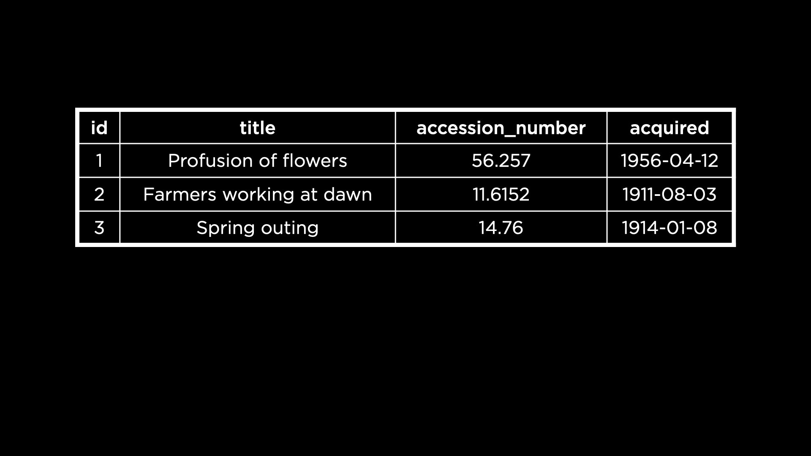
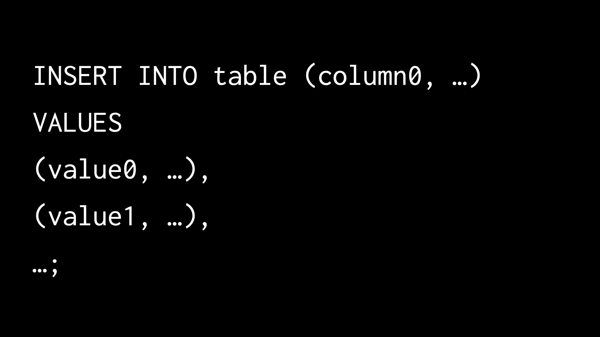
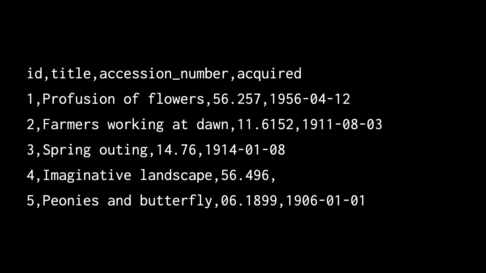
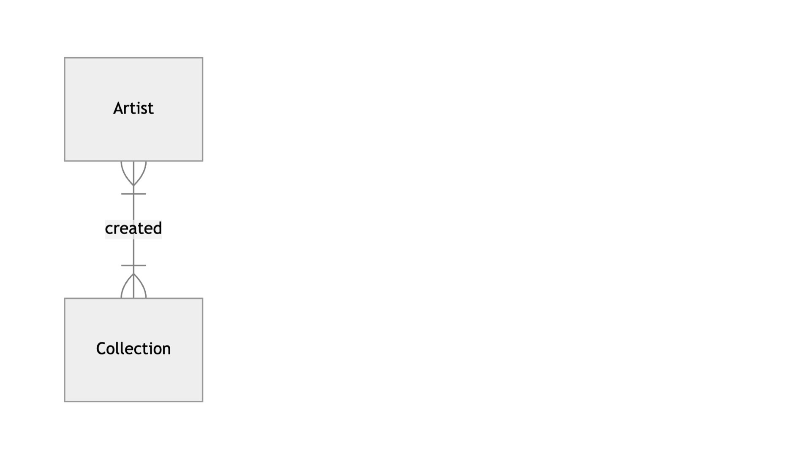
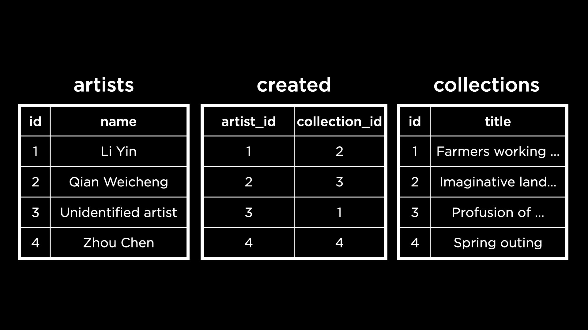
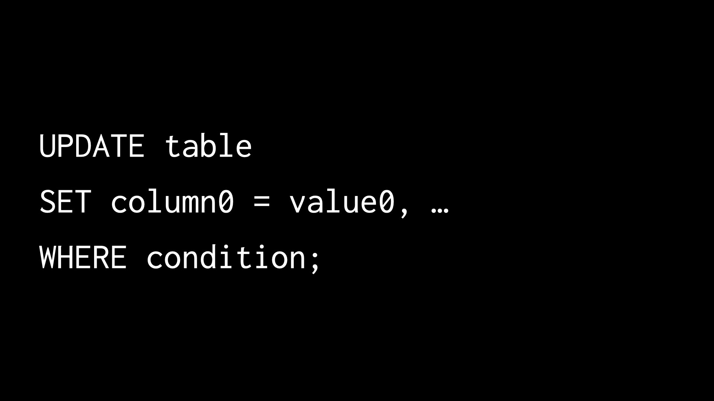

讲座 3
- Introduction
- Database Schema
- Inserting Data
- Other Constraints
- Inserting Multiple Rows
- Deleting Data
- Updating Data
- Triggers
- Soft Deletions
- Fin
Introduction
- Last 周, we learned how to create our own database schema. In this 讲座, we’ll explore how to add, update, and delete data in our 数据库.
- The Boston MFA (Museum of Fine Arts) is a century-old museum in Boston. The MFA manages a vast collection of historical and contemporary artifacts and artwork. They likely use a database of some kind to store data 关于 their art and artifacts.
- When a new artifact is added to their collection, we can imagine they would insert the corresponding data to their database. Similarly, there are use cases in which data might need to be 阅读, updated or deleted.
- We will focus now on the creation (or insertion) of data in a Boston MFA database.
Database Schema
-
Consider this schema that the MFA might use for its collection.

- Each row of data contains the title for a piece of artwork along with the
accession_numberwhich is a unique ID used by the museum internally. There is, too, a 日期 indicating when the art was acquired. - The table contains an ID which serves as the primary key.
- We can imagine that the database administrator of the MFA runs an SQL query to insert each of these pieces of artwork into the table.
- To understand how this works, let us first create a database called
mfa.db. 下一页, we 阅读 the schema fileschema.sqlinto the database. This schema file, already given to us, helps us create the tablecollections. -
To confirm that the table has been created, we can select from the table.
SELECT * FROM "collections";This should give us an empty result, because the table doesn’t have any data yet.
Inserting Data
-
The SQL statement
INSERT INTOis used to insert a row of data into a given table.INSERT INTO "collections" ("id", "title", "accession_number", "acquired") VALUES (1, 'Profusion of flowers', '56.257', '1956-04-12');We can see that this command requires the list of columns in the table that will receive new data and the values to be added to each column, in the same order.
-
Running the
INSERT INTOcommand returns nothing, but we can run a query to confirm that the row is now present incollections.SELECT * FROM "collections"; -
We can add 更多 rows to the database by inserting multiple times. However, typing out the value of the primary key manually (as 1, 2, 3 etc.) might result in errors. Thankfully, SQLite can fill out the primary key values automatically. To make use of this functionality, we omit the ID column altogether while inserting a row.
INSERT INTO "collections" ("title", "accession_number", "acquired") VALUES ('Farmers working at dawn', '11.6152', '1911-08-03');We can check that this row has been inserted with an
idof 2 by runningSELECT * FROM "collections";Notice that the way SQLite fills out the primary key values is by incrementing the 上一页 primary key—in this case, 1.
问题
If we delete a row with the primary key 1, will SQLite automatically assign a primary key of 1 to the 下一页 inserted row?
- No, SQLite actually selects the highest primary key value in the table and increments it to generate the 下一页 primary key value.
Other Constraints
-
Opening the file
schema.sqlwill pull up the schema for the database.CREATE TABLE "collections" ( "id" INTEGER, "title" TEXT NOT NULL, "accession_number" TEXT NOT NULL UNIQUE, "acquired" NUMERIC, PRIMARY KEY("id") ); - It is specified that the accession number is unique. If we try to insert a row with a repeated accession number, we will trigger a error that looks like
Runtime error: UNIQUE constraint failed: collections.accession_number (19). - This error informs us that the row we are trying to insert violates a constraint in the schema—specifically the
UNIQUEconstraint in this scenario. -
Similarly, we can try to add a row with a
NULLtitle, violating theNOT NULLconstraint.INSERT INTO "collections" ("title", "accession_number", "acquired") VALUES(NULL, NULL, '1900-01-10');On running this, we will again see an error that looks like
Runtime error: NOT NULL constraint failed: collections.title (19). - In this manner, the schema constraints are guardrails that protect us from adding rows that do not follow the schema of our database.
Inserting Multiple Rows
-
We 五月 need to insert 更多 than one row at a 时间 while writing into a database. One way to do this is to separate out the rows using commas in the
INSERT INTOcommand.
Inserting multiple rows at once in this manner allows the programmer some convenience. It is also a faster, 更多 efficient way of inserting rows into a database.
-
Let us now insert two new paintings into the
collectionstable.INSERT INTO "collections" ("title", "accession_number", "acquired") VALUES ('Imaginative landscape', '56.496', NULL), ('Peonies and butterfly', '06.1899', '1906-01-01');The museum 五月 not always know exactly when a painting was acquired, hence it is possible for the
acquiredvalue to beNULL, as is the case for the first painting we just inserted. -
To see the updated table, we can select all rows from the table as always.
SELECT * FROM "collections"; -
Our data could also be stored in a comma-separated values format, or CSV. Observe in the following 示例 how the values in each row are separated by a comma.

- SQLite makes it possible to import a CSV file directly into our database. To do this, we need to start from scratch. Let us leave this database
mfa.dband then remove it. - We already have a CSV file called
mfa.csvthat contains the data we need. On opening up this file, we can 笔记 that the first row contains the column names, which match exactly with the column names of our tablecollectionsas per the schema. - First, let us create again the database
mfa.dband 阅读 the schema file as we did earlier. -
下一页, we can import the CSV by running a SQLite command.
.import --csv --skip 1 mfa.csv collectionsThe first argument,
--csvindicates to SQLite that we are importing a CSV file. This will help SQLite parse the file correctly. The second argument indicates that the first row of the CSV file (the header row) needs to be skipped, or not inserted into the table. - We can select all the data from the
collectionstable to see that every painting frommfa.csvhas been successfully imported into the table. - The CSV file we just inserted contained primary key values (1, 2, 3 etc.) for each row of data. However, it is 更多 likely that CSV files we work with will not contain the ID or primary key values. How can we have SQLite insert them automatically?
-
To try this out, let’s 打开 up
mfa.csvin our codespace and delete theidcolumn from the header row, along with the values in each column. This is whatmfa.csvshould look like once we finish editing:title,accession_number,acquired Profusion of flowers,56.257,1956-04-12 Farmers working at dawn,11.6152,1911-08-03 Spring outing,14.76,1914-01-08 Imaginative landscape,56.496, Peonies and butterfly,06.1899,1906-01-01 -
We will also delete all the rows that are already within the
collectionstable.DELETE FROM "collections"; - Now, we want to import this CSV file into a table. However, the
collectionstable (as per our schema) must have four columns in every row. This new CSV file contains only three columns for every row. Hence, we cannot proceed to import in the same way we did before. -
To successfully import the CSV file without ID values, we will to use a temporary table:
.import --csv mfa.csv tempNotice how we don’t use the argument
--skip 1with this command. This is because SQLite is capable of recognizing the very first row of CSV data as the header row, and converts those into the column names of the newtemptable. -
We can see the data within the
temptable by querying it.SELECT * FROM "temp"; -
下一页, we will select the data (without primary keys) from
tempand move it tocollections, which was the goal all along! We can use the following command to achieve this.INSERT INTO "collections" ("title", "accession_number", "acquired") SELECT "title", "accession_number", "acquired" FROM "temp";In this process, SQLite will automatically add the primary key values in the
idcolumn. -
Just to clean up our database, we can also drop the
temptable once we’re done moving data.DROP TABLE "temp";
问题
Can we place columns in specific positions while inserting into a table?
- While we can change the ordering of values in the
INSERT INTOcommand, we usually can’t change the ordering of the column names themselves. The order of column names follows the same order used while creating the table.
What happens if one of the multiple rows we are trying to insert violates a table constraint?
- While trying to insert multiple rows into a table, if even one of them violates a constraint, the insertion command will result in an error and none of the rows will be inserted!
After inserting data from the CSV, one of the cells was empty and not
NULL. Why did this happen?
- When we imported data from the CSV file, one of the
acquiredvalues was missing! This was interpreted as text and hence, 阅读 into the table as an empty text value. We can run queries on the table after importing to convert these empty values intoNULLif 必需.
Deleting Data
-
We saw previously that running the following command deleted all rows from the table
collections. (We don’t want to actually run this command now or we’ll lose all the data in the table!)DELETE FROM "collections"; -
We can also delete rows that match specific conditions. For 示例, to delete the painting “春季 outing” from our table
collectionswe can run:DELETE FROM "collections" WHERE "title" = 'Spring outing'; -
To delete any paintings with the 日期 acquired as
NULLwe can runDELETE FROM "collections" WHERE "acquired" IS NULL; -
As we always do, we will make sure the deletion worked as expected by selecting all data from the table.
SELECT * FROM "collections";We see that the “春季 outing” and “Imaginative landscape” paintings are not in the table anymore.
-
To delete rows pertaining to paintings older than 1909, we can run
DELETE FROM "collections" WHERE "acquired" < '1909-01-01';Using the
<operator here, we are finding the paintings acquired before 一月 1, 1909. These are the paintings that will be deleted on running the query. - There might be cases where deleting some data could impact the integrity of a database. Foreign key constraints are a good 示例. A foreign key column references the primary key of a different table. If we were to delete the primary key, the foreign key column would have nothing to reference!
-
Consider now an updated schema for the MFA database, containing information not just 关于 artwork but also artists. The two entities Artist and Collection have a many-to-many relationship—a painting can be created by many artists and a single artist can also create many pieces of artwork.

-
Here is a database implementing the above ER Diagram.

The
artistsandcollectionstables have primary keys—the ID columns. Thecreatedtable references these IDs in its two foreign key columns. - Given this database, if we choose to delete the unidentified artist (with the ID 3), what would happen to the rows in the table
createdwith anartist_idof 3? Let’s try it out. - After opening up
mfa.db, we can now see the updated schema by running the.schemacommand. Thecreatedtable does indeed have two foreign key constraints, one for the artist ID and one for the collection ID. -
Now, we can try to delete from the
artiststable.DELETE FROM "artists" WHERE "name" = 'Unidentified artist';On running this, we get an error very similar to ones we have seen before in this class:
Runtime error: FOREIGN KEY constraint failed (19). This error notifies us that deleting this data would violate the foreign key constraint set up in thecreatedtable. -
How do we ensure that the constraint is not violated? One possibility is to delete the corresponding rows from the
createdtable before deleting from theartiststable.DELETE FROM "created" WHERE "artist_id" = ( SELECT "id" FROM "artists" WHERE "name" = 'Unidentified artist' );This query effectively deletes the artist’s affiliation with their work. Once the affiliation no longer exists, we can delete the artist’s data without violating the foreign key constraint. To do this, we can run
DELETE FROM "artists" WHERE "name" = 'Unidentified artist'; - In another possibility, we can specify the action to be taken when an ID referenced by a foreign key is deleted. To do this, we use the keyword
ON DELETEfollowed by the action to be taken.-
ON DELETE RESTRICT: This restricts us from deleting IDs when the foreign key constraint is violated. -
ON DELETE NO ACTION: This allows the deletion of IDs that are referenced by a foreign key and nothing happens. -
ON DELETE SET NULL: This allows the deletion of IDs that are referenced by a foreign key and sets the foreign key references toNULL. -
ON DELETE SET DEFAULT: This does the same as the 上一页, but allows us to set a default value instead ofNULL. -
ON DELETE CASCADE: This allows the deletion of IDs that are referenced by a foreign key and also proceeds to cascadingly delete the referencing foreign key rows. For 示例, if we used this to delete an artist ID, all the artist’s affiliations with the artwork would also be deleted from thecreatedtable.
-
-
The latest version of the schema file implements the above method. The foreign key constraints now look like
FOREIGN KEY("artist_id") REFERENCES "artists"("id") ON DELETE CASCADE FOREIGN KEY("collection_id") REFERENCES "collections"("id") ON DELETE CASCADENow running the following
DELETEstatement will not result in an error, and will cascade the deletion from theartiststable to thecreatedtable:DELETE FROM "artists" WHERE "name" = 'Unidentified artist';To check that this cascading deletion worked, we can query the
createdtable:SELECT * FROM "created";We observe that none of the rows have an ID of 3 (the ID of the artist deleted from the
artiststable).
问题
We just deleted an artist with the ID of 3. Is there any way to make the 下一页 inserted row have an ID of 3?
- By default, as we discussed before, SQLite will select the largest ID present in the table and increment it to obtain the 下一页 ID. But we can use the
AUTOINCREMENTkeyword while creating a column to indicate that any deleted ID should be repurposed for a new row being inserted into the table.
Updating Data
- We can easily imagine scenarios in which data in a database would need to be updated. Perhaps, in the case of the MFA database, we find out that the painting “Farmers working at dawn” originally mapped to an “Unidentified artist” was actually created by the artist Li Yin.
-
We can use the update command to make changes to say, the affiliation of a painting. Here is the syntax of the update command.

-
Let’s change this affiliation for “Farmers working at dawn” in the
createdtable using the above syntax.UPDATE "created" SET "artist_id" = ( SELECT "id" FROM "artists" WHERE "name" = 'Li Yin' ) WHERE "collection_id" = ( SELECT "id" FROM "collections" WHERE "title" = 'Farmers working at dawn' );The first part of this query specifies the table to be updated. The 下一页 part retrieves the ID of Li Yin to set as the new ID. The last part selects the row(s) in
createdwhich will be updated with the ID of Li Yin, which is the painting “Farmers working at dawn”!
Triggers
- A trigger is a SQL statement that runs automatically in response to another SQL statement, such as an
INSERT,UPDATE, orDELETE. - Triggers are useful for maintaining data consistency and automating tasks across related tables.
Creating a “Sell” Trigger
-
Consider the MFA database with a
collectionstable and a newtransactionstable.CREATE TABLE "transactions" ( "id" INTEGER, "title" TEXT, "action" TEXT, PRIMARY KEY("id") ); -
When artwork is sold (deleted from
collections), we want it automatically logged intransactionswith an action of “sold”.CREATE TRIGGER "sell" BEFORE DELETE ON "collections" BEGIN INSERT INTO "transactions" ("title", "action") VALUES (OLD."title", 'sold'); END; - This trigger runs before a row is deleted from
collections. - OLD is a special keyword that refers to the row being deleted.
-
OLD."title"accesses the title column of the row 关于 to be deleted. - The trigger automatically inserts a record into
transactionswith the action “sold”.
Creating a “Buy” Trigger
-
When artwork is bought (inserted into
collections), we want it logged intransactionswith an action of “bought”.CREATE TRIGGER "buy" AFTER INSERT ON "collections" BEGIN INSERT INTO "transactions" ("title", "action") VALUES (NEW."title", 'bought'); END; - This trigger runs after a new row is inserted into
collections. - NEW is a special keyword that refers to the row being inserted.
-
NEW."title"accesses the title column of the newly inserted row.
问题
Can we have multiple SQL statements inside a trigger?
- Yes, you can have multiple statements inside the
BEGINandENDblocks, separated by semicolons.
Soft Deletions
- Soft deletion (or a soft delete) means marking data as deleted rather than actually removing it from the database.
-
For 示例, we could add a
deletedcolumn to thecollectionstable with a default value of 0:ALTER TABLE "collections" ADD COLUMN "deleted" INTEGER DEFAULT 0; -
To “delete” a row, we would update the
deletedcolumn to 1:UPDATE "collections" SET "deleted" = 1 WHERE "title" = 'Farmers working at dawn'; -
Then, to query only non-deleted rows:
SELECT * FROM "collections" WHERE "deleted" != 1; - This way, data can be recovered if needed and maintains a complete historical record.
- However, it’s still important to comply with data 隐私 regulations that require data to be truly deleted.
Fin
- This brings us to the conclusion of 讲座 3 关于 Writing in SQL!